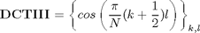

Calculation of DCT_IV using DCT_III
Contents
Definitions
Result of transform is y=x*T, where y, x are row-vectors T is transform matrix
DCT_IV matrix definition
N=8; DCT4=cos(pi/N*[(0:N-1)+1/2]'*[(0:N-1)+1/2])
DCT4 =
0.9952 0.9569 0.8819 0.7730 0.6344 0.4714 0.2903 0.0980
0.9569 0.6344 0.0980 -0.4714 -0.8819 -0.9952 -0.7730 -0.2903
0.8819 0.0980 -0.7730 -0.9569 -0.2903 0.6344 0.9952 0.4714
0.7730 -0.4714 -0.9569 0.0980 0.9952 0.2903 -0.8819 -0.6344
0.6344 -0.8819 -0.2903 0.9952 -0.0980 -0.9569 0.4714 0.7730
0.4714 -0.9952 0.6344 0.2903 -0.9569 0.7730 0.0980 -0.8819
0.2903 -0.7730 0.9952 -0.8819 0.4714 0.0980 -0.6344 0.9569
0.0980 -0.2903 0.4714 -0.6344 0.7730 -0.8819 0.9569 -0.9952
DCT_III matrix definition

DCT3=cos(pi/N*[[(0:N-1)+1/2]'*(0:N-1)])
DCT3 =
1.0000 0.9808 0.9239 0.8315 0.7071 0.5556 0.3827 0.1951
1.0000 0.8315 0.3827 -0.1951 -0.7071 -0.9808 -0.9239 -0.5556
1.0000 0.5556 -0.3827 -0.9808 -0.7071 0.1951 0.9239 0.8315
1.0000 0.1951 -0.9239 -0.5556 0.7071 0.8315 -0.3827 -0.9808
1.0000 -0.1951 -0.9239 0.5556 0.7071 -0.8315 -0.3827 0.9808
1.0000 -0.5556 -0.3827 0.9808 -0.7071 -0.1951 0.9239 -0.8315
1.0000 -0.8315 0.3827 0.1951 -0.7071 0.9808 -0.9239 0.5556
1.0000 -0.9808 0.9239 -0.8315 0.7071 -0.5556 0.3827 -0.1951
Finding relations
From [1] we know that DCTIV matrix can be expressed in terms of Tschebyshev polynomials
DCTIII matrix can be analogously expressed as
Because there exist relation
we can express DCTIII through DCTIV
where
B=diag(ones(1,N))+diag(ones(1,N-1),1); B(1,1)=2; B=B/2; D=diag(cos(pi/2/N*([0:N-1]+1/2)));
Check expression of DCT_III through DCT_IV
Check DCTIII matrix
inv(D)*DCT4*B
ans =
1.0000 0.9808 0.9239 0.8315 0.7071 0.5556 0.3827 0.1951
1.0000 0.8315 0.3827 -0.1951 -0.7071 -0.9808 -0.9239 -0.5556
1.0000 0.5556 -0.3827 -0.9808 -0.7071 0.1951 0.9239 0.8315
1.0000 0.1951 -0.9239 -0.5556 0.7071 0.8315 -0.3827 -0.9808
1.0000 -0.1951 -0.9239 0.5556 0.7071 -0.8315 -0.3827 0.9808
1.0000 -0.5556 -0.3827 0.9808 -0.7071 -0.1951 0.9239 -0.8315
1.0000 -0.8315 0.3827 0.1951 -0.7071 0.9808 -0.9239 0.5556
1.0000 -0.9808 0.9239 -0.8315 0.7071 -0.5556 0.3827 -0.1951
Check computation of DCTIII transform
x=randn(1,N); y=x*DCT3 % true result y1=x*inv(D)*DCT4*B % compute DCTIII using DCTIV transform
y =
3.2983 2.8450 -0.8779 -1.4889 1.2293 -0.1254 -1.0177 2.3680
y1 =
3.2983 2.8450 -0.8779 -1.4889 1.2293 -0.1254 -1.0177 2.3680
Check expression of DCT_IV through DCT_III
D*DCT3*inv(B)
ans =
0.9952 0.9569 0.8819 0.7730 0.6344 0.4714 0.2903 0.0980
0.9569 0.6344 0.0980 -0.4714 -0.8819 -0.9952 -0.7730 -0.2903
0.8819 0.0980 -0.7730 -0.9569 -0.2903 0.6344 0.9952 0.4714
0.7730 -0.4714 -0.9569 0.0980 0.9952 0.2903 -0.8819 -0.6344
0.6344 -0.8819 -0.2903 0.9952 -0.0980 -0.9569 0.4714 0.7730
0.4714 -0.9952 0.6344 0.2903 -0.9569 0.7730 0.0980 -0.8819
0.2903 -0.7730 0.9952 -0.8819 0.4714 0.0980 -0.6344 0.9569
0.0980 -0.2903 0.4714 -0.6344 0.7730 -0.8819 0.9569 -0.9952
Check computation of DCTIV transform
y=x*DCT4 % true result y1=x*D*DCT3*inv(B) % compute DCTIV using DCTIII transform
y =
3.3152 1.2507 -2.0502 0.0787 1.0839 -1.2442 0.6869 2.1754
y1 =
3.3152 1.2507 -2.0502 0.0787 1.0839 -1.2442 0.6869 2.1754
Reference
[1] Markus Pueschel, Jose M.F. Moura. The Algebraic Approach to the Discrete Cosine and Sine Transforms and their Fast Algorithms SIAM Journal of Computing 2003, Vol. 32, No. 5, pp. 1280-1316.